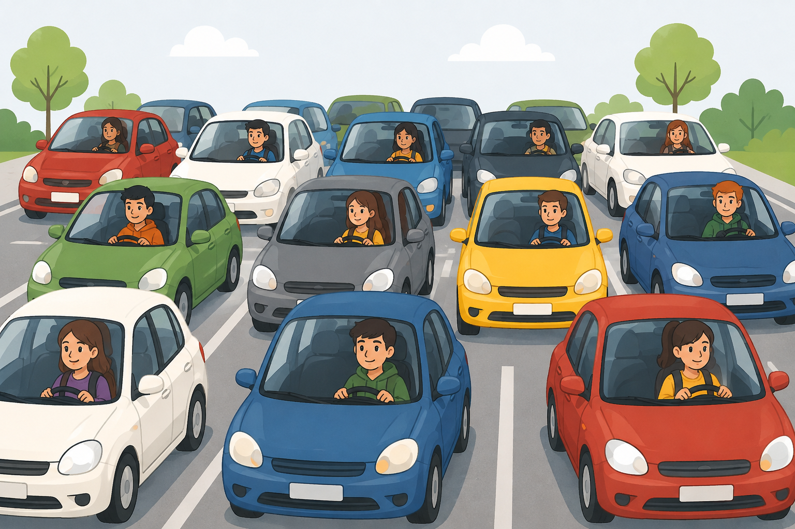
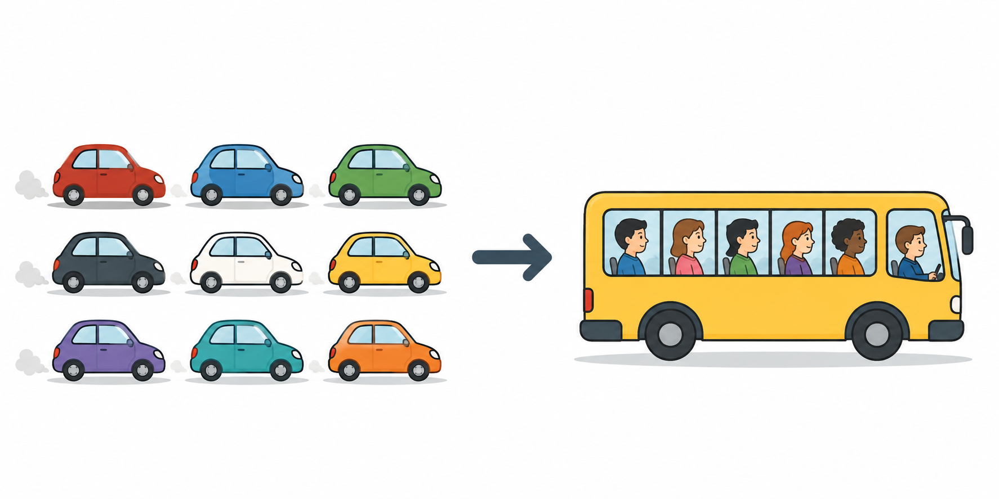
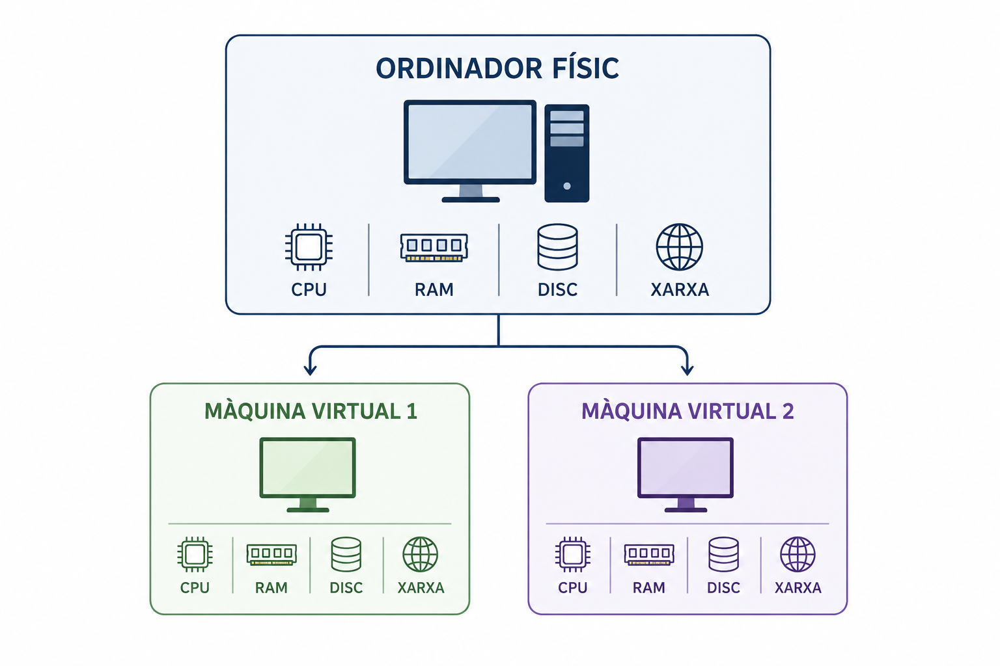
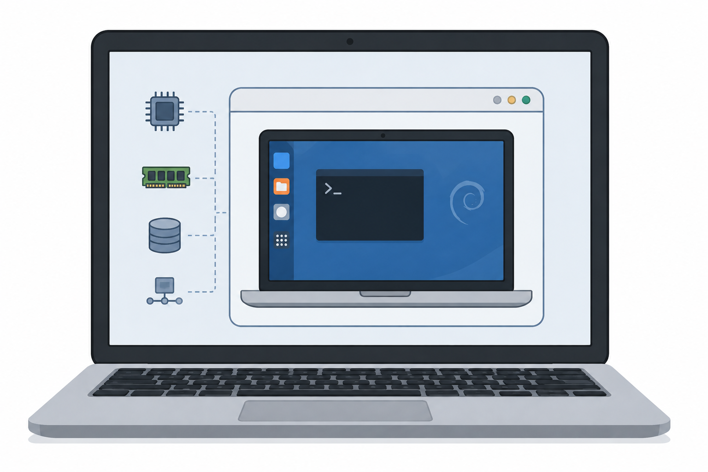
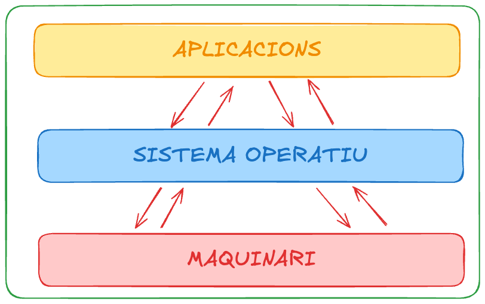
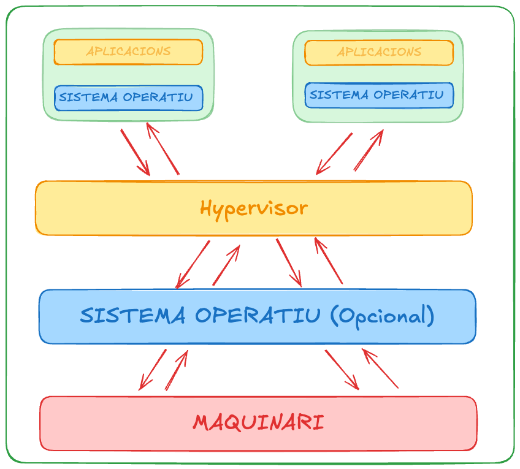
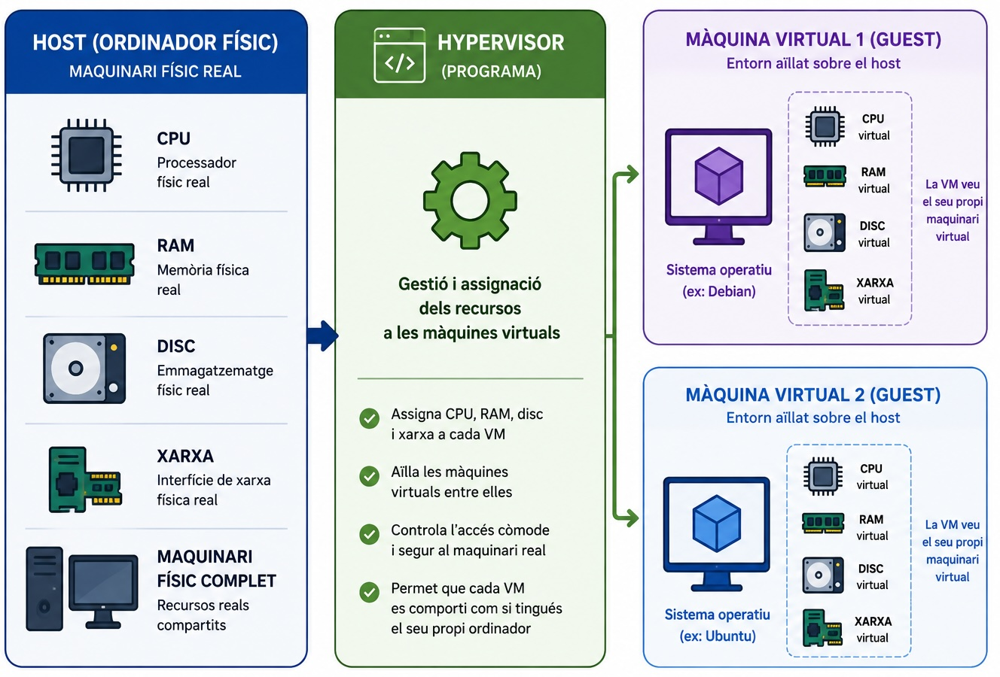

Virtualització
Sessió 1 · Curs zero d’Informàtica
Per què necessitem virtualització?
Imagineu un món sense bus escolar
- Cada estudiant necessita el seu propi cotxe.
- Cada cotxe necessita recursos.
- Però cada cotxe transporta només una persona.

Molts recursos utilitzats per transportar molt poca gent.
La solució: compartir recursos

- Un únic vehicle compartit.
- Diversos passatgers.
- Els recursos es comparteixen.
Això és,…, la idea de la virtualització.
Definició
Definició formal
Tècnica que permet crear diversos entorns lògics independents sobre un mateix maquinari físic.
En poques paraules
Un ordinador → es comporta com si fossin molts ordinadors.
Per a què serveix, a la pràctica?
- Provar un sistema operatiu diferent sense modificar el sistema operatiu principal.
- Tenir un entorn de treball aïllat: si l’espatlles, no afecta el teu ordinador real.
- Poder recuperar l’entorn fàcilment després d’un error.
- Executar diversos serveis o projectes de manera separada en un sol servidor físic.
Com funciona?

- Un únic ordinador físic.
- Diversos entorns virtuals.
- Els recursos es comparteixen.
Un ordinador físic → diversos ordinadors virtuals
Què és una màquina virtual?
Una VM té el seu propi maquinari virtual.

- Sistema Operatiu
- CPU virtual
- Memòria RAM virtual
- Disc virtual
- Interfície de xarxa virtual
Host i Guest
Quan treballem amb màquines virtuals utilitzarem dos conceptes:
Host
L’ordinador físic que proporciona els recursos.
Guest
La màquina virtual que funciona sobre el host.
Compartir ≠ interferir
Les VMs comparteixen els recursos físics del host, però mantenen el seu propi entorn, funcionant de manera aïllada entre elles.
- Cada VM té el seu propi: sistema de fitxers, processos, configuració…
- Els processos d’una VM estan aïllats dels processos de les altres VM.
- Un problema dins d’una VM queda, en general, aïllat de les altres VM i del host.
Esquema sense virtualització

Esquema amb virtualització

Hypervisor

Dos tipus d’hipervisor
| Tipus 1 | Tipus 2 | |
|---|---|---|
| On s’executa | Directament sobre el maquinari | Sobre un sistema operatiu host |
| Ús típic | Servidors | Ordinadors personals |
| Exemple | VMware ESXi, Hyper-V | VMware Workstation, VirtualBox |
Nosaltres utilitzarem VMware Workstation, un hipervisor de Tipus 2.
D’on surten els recursos?
ORDINADOR: 16 GB RAM
↓
VM: 4 GB RAM
↓
D’on surten aquests 4 GB?
De la RAM física de l’ordinador host.
I si en creo dues VM de 4 GB?
I si en creo quatre?
No podem assignar recursos il·limitadament: els recursos físics del host són finits.
Virtual ≠ imaginari
Els recursos de la màquina virtual són virtuals, però utilitzen recursos físics reals.
| Recurs virtual | Recurs físic |
|---|---|
| CPU virtual | CPU del host |
| RAM virtual | RAM del host |
| Disc virtual | Emmagatzematge del host |
| Xarxa virtual | Interfície de xarxa del host |
La virtualització crea una abstracció del maquinari.
Un últim càlcul
Un host amb 16 GB de RAM executa:
- VM 1 → 4 GB
- VM 2 → 4 GB
- VM 3 → 4 GB
Què li queda al host?
16 − 4 − 4 − 4 = 4 GB
És exactament així de senzill en un sistema real?
No del tot: el sistema operatiu host i la virtualització també necessiten recursos.

Sessió 1 · Curs zero d’Informàtica · Campus Igualada 🏠